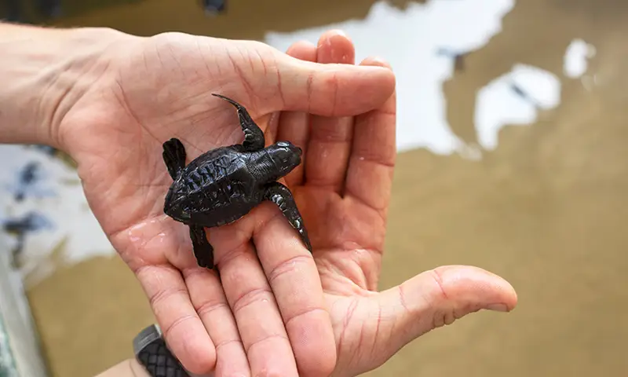
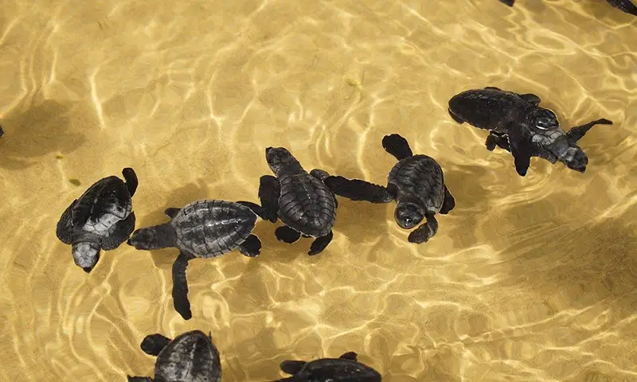
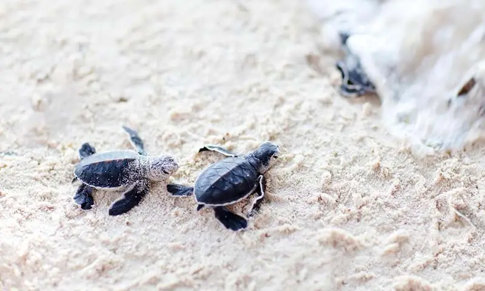
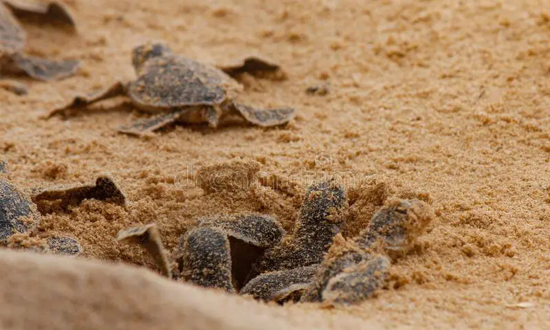

Hikkaduwa turtle hatchery is a conservation project located on the south-west coast of Sri Lanka. The hatchery is dedicated to protecting sea turtles by rescuing and incubating turtle eggs and releasing the hatchlings back into the ocean. It also serves as an education center for visitors to learn about the importance of turtle conservation.



